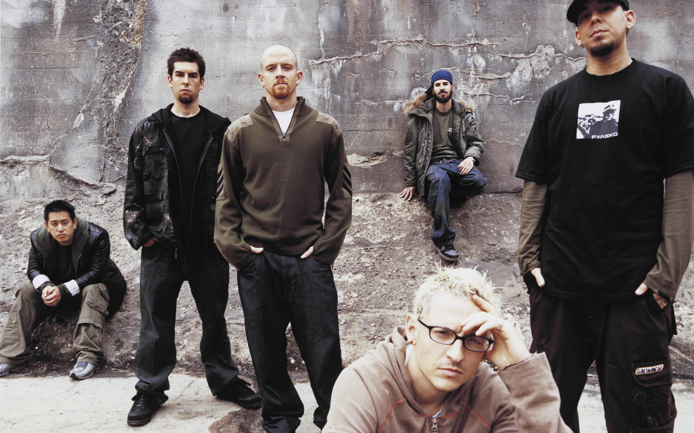
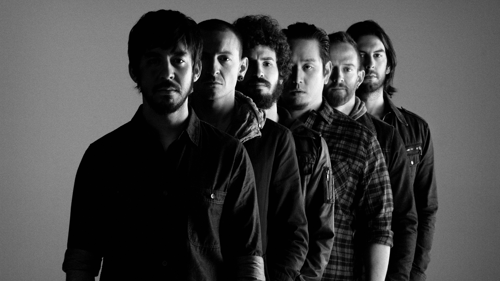
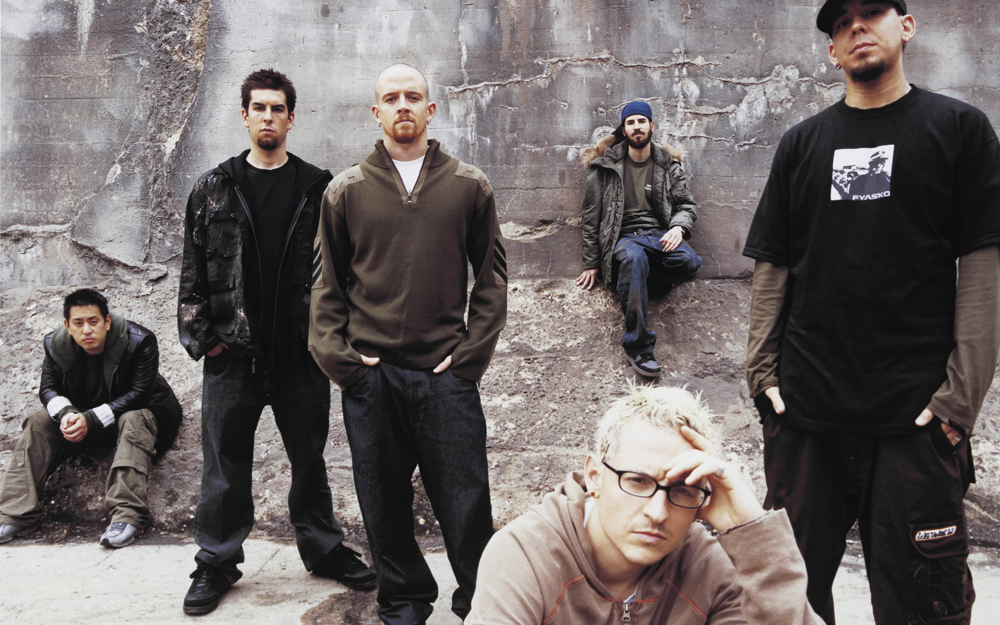
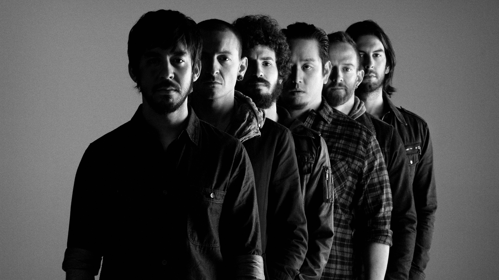

LINKIN PARK
BIOGRAFIA
Linkin Park é uma banda norte-americana de rock formada em 1996 em Agoura Hills, na Califórnia. A banda é formada por Chester Bennington e Mike Shinoda (vocalistas), Joseph Hahn (Dj), Rob Bourdon (baterista), Brad Delson (guitarrista) e Dave Farrel (baixista). Linkin Park lançou seu primeiro álbum “Hibrid Theory” em 2000, que se tornou o álbum mais vendido de 2001. Recebeu um Grammy de Melhor Performance, além de indicações para o melhor álbum de rock e Melhor Revelação. O segundo álbum “Metera” foi classificado no topo na lista do Billboard 200. Em 2003 a banda Linkin Park foi nomeada pela MTV2 a sexta maior banda da era de videoclipes e também a terceira melhor banda, atrás de Oasis e Coldplay. O terceiro álbum de estúdio “Minutes to Midnight”, atingiu o topo das paradas e foi o disco mais vendido em 2007. Em 2010, a banda lançou “The Tousand Suns”, que logo se tornou líder em vendas em mais de quinze países. Em 2014 a banda Linkin Park lançou “The Hunting Party”, que reúne todos os elemento e gêneros dos trabalhos anteriores. Entre as músicas mais famosas do Linkin Park estão: Bum it Down, In the End, A Place For My Head, Faint e Living Things. Infelizmente em 20 de julho de 2017, Chester Bennington foi encontrado morto em sua casa, em Palos Verdes Estates, Califórnia, nos Estados Unidos. Homenagem para Chester Bennington.
Chester Charles Bennington foi um cantor, compositor, ator e vocalista da banda americana Linkin Park. Ele também trabalhou no grupo Dead by Sunrise e foi vocalista do Stone Temple Pilots entre 2013 e 2015. Bennington ganhou notoriedade devido a sua carreira como vocalista da banda Linkin Park. Homenagem
Michael Kenji "Mike" Shinoda é um músico, produtor musical e artista norte-americano. Conhecido como vocalista, rapper, compositor e multi-instrumentista da banda estadunidense Linkin Park. Também tem um projeto paralelo chamado Fort Minor, mais voltado para o Hip Hop.
Joseph "Joe" Hahn é o DJ da banda estadunidense Linkin Park.
Robert Gregory Bourdon é o baterista da banda Linkin Park. Ele é mais conhecido como Rob Bourdon.
Bradford Phillip Kaplan Delson é um músico, compositor e produtor musical americano, mais conhecido como um dos fundadores e guitarrista do grupo de rock estadunidense Linkin Park. Ele é mais conhecido como Brad Delson. Brad é um dos mais descontraídos da banda.
David "Dave" Michael Farrell, também conhecido como Phoenix, é o baixista da banda americana de rock, Linkin Park.
FOTOS

 



AGENDA
Linkin Park
Em Barreiras-Ba
Hora: 21:00
Data: 02/10/2020
Linkin Park
Em São Paulo-Sp
Hora: 00:00
Data: 20/10/2020
Linkin Park
Em Morpará-Ba
Hora: 20:00
Data: 05/11/2020
Linkin Park
Em Barra-Ba
Hora: 19:00
Data: 28/11/2020
Linkin Park
Em Xique Xique-Ba
Hora: 21:30
Data: 15/12/2020
Linkin Park
Em Ibotirama-Ba
Hora: 22:00
Data: 30/12/2020